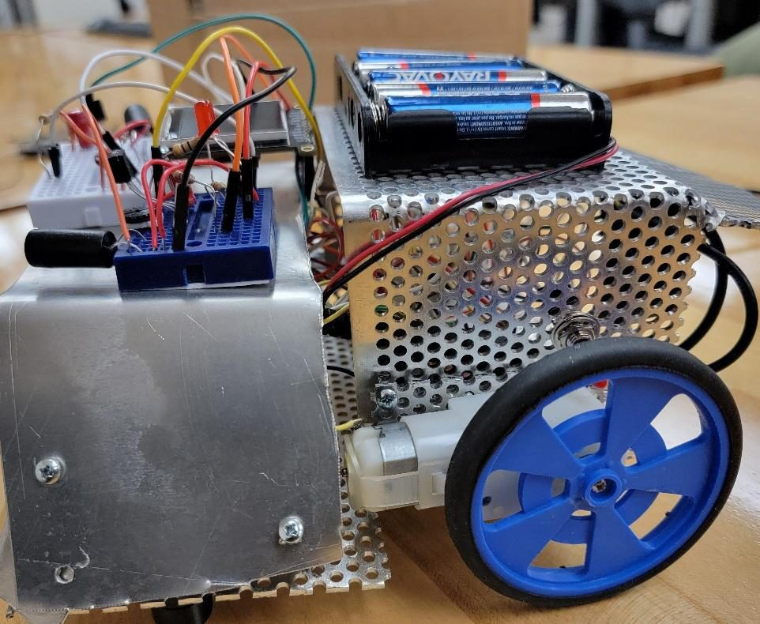
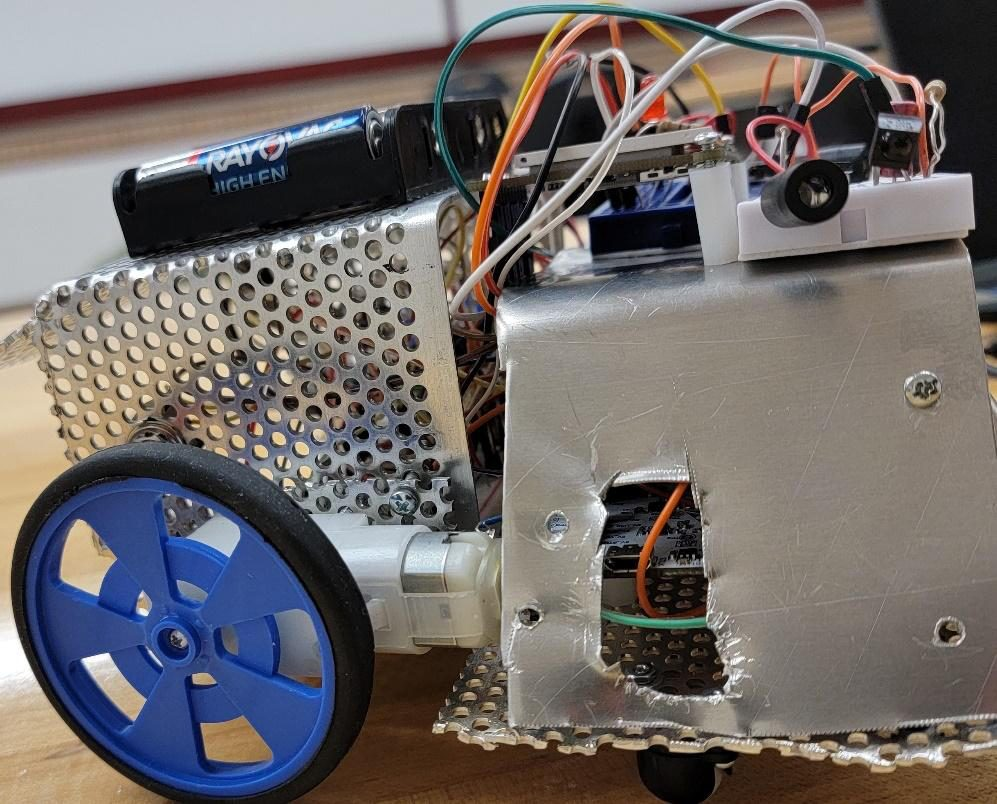

I designed, built, and tested an autonomous Sumobot for competition: a robot that waits five seconds, then hunts for an opponent, pushes it out of the ring, and backs off when it senses the ring's edge — all on an STM32U575 in bare-metal C. The robot is organized into five subsystems (power, motion, display, line sensing, and object detection), each independently bench-tested before integration, and the whole behavior is coordinated by a finite state machine.

The assembled bot — STM32U575, motor driver, IR sensors, and a 7.5 V battery pack on a custom chassis.

Drive side — geared motors, voltage regulation, and the motor-control wiring.
What I built
1) Motion & motor control
Drove two motors through a dual H-bridge driver using a timer in PWM mode (~3 kHz) to set speed, plus four GPIOs for direction.
Implemented forward, backward, turning, spinning, and stop primitives, then verified each one's PWM waveform and duty cycle on an Analog Discovery scope.
2) Line sensing & object detection
Used two analog reflectance sensors to read the ring edge, converting reflected-light intensity to a percentage via ADC and thresholding it to a binary white/black decision.
Built an IR transmitter/receiver pair (≈38 kHz, 0.48 ms on / 5 ms off) to detect opponents, with a potentiometer to tune detection distance.
3) Behavior FSM
Wrote a finite state machine over the sensor inputs — search (spin), engage (push), and edge-recovery (stop → back up → turn) — so the robot stays in the ring while hunting.
Surfaced live sensor percentages and state messages ("Searching…", "Got you!", "Whoops…") on an LCD to make debugging and threshold tuning fast.
Testing & results
Authored a full test plan with per-subsystem procedures, expected vs. actual results, and troubleshooting steps — every subsystem passed its bench test.
Met all three competition constraints: under 7 × 7 in footprint (measured 6.7 × 6.5 in), under 1.5 lb (≈1.39 lb), and a 5-second start delay.
Verified power delivery (7.27 V main, 4.98 V regulated, 3.29 V logic) and tuned line-sensor thresholds against measured white/black readings.
5 subsystems · all bench-tested · all constraints met
Power, motion, display, line sensing, and object detection — each validated independently, then integrated under one FSM.